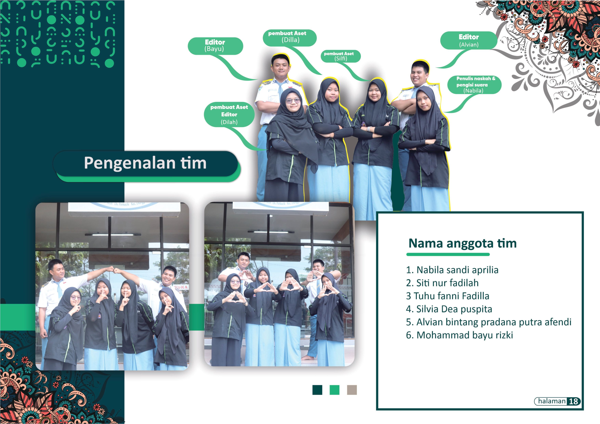

Dalam rangka mendukung penguatan karakter pelajar melalui media digital, kami mendapatkan tugas dari Pusdatin Kemdikbud untuk membuat 10 video motion graphic bertema nilai-nilai Pancasila. Proyek ini dirancang untuk diselesaikan dalam waktu 3 bulan, tetapi tim kami berhasil menuntaskan seluruh produksi lebih cepat dari waktu yang ditargetkan. Setiap video dikerjakan oleh 5 kelompok, yang masing-masing terdiri dari 6 anggota. Masing-masing kelompok bertanggung jawab menghasilkan 2 video mulai dari ide awal hingga tahap finalisasi visual dan narasi.
Visual bukan hanya soal estetika — ia adalah bahasa yang mampu menyampaikan nilai dan budaya secara universal.— Mohammad Bayu Rizki
Tim Kelompok 1
Saya berperan sebagai Ketua Proyek sekaligus menjadi bagian dari Kelompok 1 yang mengerjakan dua video motion grafis dengan tema:
- Mengenal dan Menghargai Budaya
- Komunikasi Interkultur
Anggota kelompok kami:
- Mohammad Bayu Rizki
- Alvian Bintang Pradana Putra Afendi
- Siti Nur Fadilah
- Nabila Sandi Aprilia
- Tuhu Fani Fadilla
- Silvia Dea Puspita
Dokumentasi Anggota

Isi dan Tema Video
- Mengenal dan Menghargai Budaya
- Komunikasi Interkultur
Video ini menampilkan ragam budaya Indonesia seperti tari tradisional, rumah adat, dan simbol-simbol lokal yang dikemas dalam bentuk animasi dinamis dan edukatif. Pesan utamanya adalah pentingnya menjaga warisan budaya sebagai identitas bangsa.
Berfokus pada pentingnya komunikasi yang efektif antar budaya di tengah keberagaman. Visualisasi menggambarkan pelajar dari berbagai latar belakang bekerja sama dan membangun relasi harmonis di lingkungan global.
Proses Kreatif & Teknologi
Proses produksi video dilakukan melalui tahapan terstruktur:
- Brainstorming & Riset: Mencari topik, narasi, dan insight berdasarkan nilai-nilai Pancasila dan konteks kehidupan pelajar.
- Storyboarding & Desain Visual: Menggunakan Figma untuk membuat storyboard, elemen karakter, dan aset visual pendukung.
- Animasi & Produksi: Menggunakan Adobe After Effects untuk animasi dan Premiere Pro untuk penggabungan narasi, musik latar, dan efek suara.
- Review & Finalisasi: Setiap video melalui proses evaluasi antar kelompok dan validasi dari guru pembimbing sebelum diserahkan ke Pusdatin.
Video Hasil
1. Komunikasi Interkultur
2. Mengenal dan Menghargai Budaya
Dampak & Apresiasi
🎯 Proyek ini memberikan pengalaman nyata dalam kolaborasi tim kreatif, kepemimpinan proyek, dan komunikasi visual. Keberhasilan kelompok kami dalam menyelesaikan tugas lebih cepat dari tenggat waktu menunjukkan kedisiplinan dan komitmen tim yang kuat.
✅ Pusdatin Kemdikbud secara resmi mengapresiasi hasil karya kami, dan video-video ini digunakan sebagai bahan ajar alternatif dalam memperkenalkan nilai Pancasila secara kontekstual kepada siswa di berbagai daerah.
Penutup
Melalui proyek ini, saya belajar bahwa visual bukan hanya soal estetika, tapi juga alat komunikasi yang kuat untuk menyampaikan nilai moral dan kebangsaan. Motion grafis bukan sekadar animasi, tapi representasi dari identitas, ide, dan harapan akan masa depan pelajar Indonesia yang cerdas, kreatif, dan toleran.